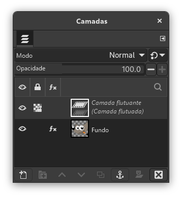

|

|
 |
| Capítulo 4. O que fazer se você não souber como prosseguir |

|
2.2. A seleção está escondida |
Figura 4.1. Diálogo de camadas exibindo uma seleção flutuante.

Mostrando uma seleção flutuante que pode ser ancorada ( Ctrl+H) ou transformada em uma nova camada ( Shift+Ctrl+N).
Como saber: se há uma seleção flutuante, muitas ações se tornam impossíveis até que a seleção flutuante seja ancorada. Para verificar, veja o diálogo de camadas (certifique-se de que são as camadas da imagem em que você está trabalhando) e veja se a camada do topo é chamada de “Seleção flutuante”.
Como resolver: Clique com o botão direito na seleção flutuante para abrir o menu Camada e selecione (atalho Ctrl+H) para ancorar a seleção flutuante à camada abaixo, ou converta-a em uma camada comum selecionando (atalho Shift+Ctrl+N). Se precisar de mais ajuda sobre como fazer isso, consulte Seleções Flutuantes.